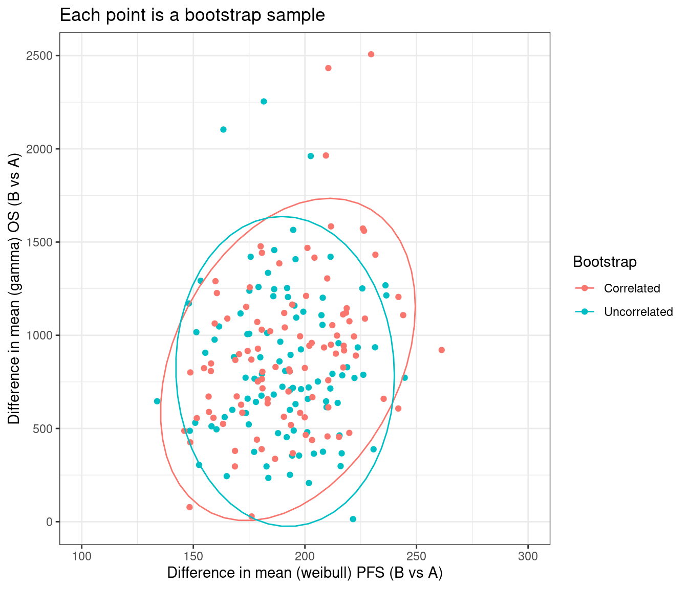

Fitting_models_in_R_bootstrap.RmdParametric survival models are often the preferred method of extrapolating survival data for use in economic models. The National Institute for Health and Care Excellence (NICE) Decision Support Unit (DSU) technical support document (TSD) 14 recommends that the Exponential, Weibull, Gompertz, log-logistic, log normal and Generalized Gamma parametric models should all be considered.[1] More recently, NICE also discusses more flexible models in NICE DSU TSD 21, however, more these models are not in the scope of this package.[2] The Canadian Agency for Drugs and Technologies in Health (CADTH) additionally specifies that the Gamma distribution must also be considered. This document therefore details the characteristics of each of these distributions and demonstrates how the parameters from each distribution, outputted using the flexsurvPlus package, can be implemented within an economic model.[3] The Generalized F distribution is not commonly used, however it has been included in this package in case it is required.
The flexsurvPlus package allows the handling of uncertainty in estimates primarily through boot strapping. This enables correlations between different endpoints to be preserved in the excel models. This vignette illustrates this with a simple example.
The following packages are required to run this example:
library(flexsurvPlus) library(tibble) library(dplyr) #> #> Attaching package: 'dplyr' #> The following objects are masked from 'package:stats': #> #> filter, lag #> The following objects are masked from 'package:base': #> #> intersect, setdiff, setequal, union library(survival) library(tidyr) library(boot) #> #> Attaching package: 'boot' #> The following object is masked from 'package:survival': #> #> aml library(ggplot2)
To perform survival analyses, patient level data is required for the survival endpoints.
This example uses a standard simulated data set (adtte). There is no standard naming that is needed for this package however, there are some set variables that are needed:
The data must be in “wide” format such that there is one row per patient and columns for each endpoint separately. In this example, we use overall survival (OS) and progression-free survival (PFS).
# simulate data with a medium correlation between PFS & OS on the patient level adtte <- sim_adtte(seed = 2020, rho = 0.6) # subset OS data and rename OS_data <- adtte %>% filter(PARAMCD=="OS") %>% transmute(USUBJID, ARMCD, OS_days = AVAL, OS_event = 1- CNSR ) # subset PFS data and rename PFS_data <- adtte %>% filter(PARAMCD=="PFS") %>% transmute(USUBJID, ARMCD, PFS_days = AVAL, PFS_event = 1- CNSR ) analysis_data <- left_join(OS_data, PFS_data, by = c("USUBJID", "ARMCD"))
Bootstrapping has been used to estimate the uncertainty of the parameters from the survival models for multiple endpoints at once to preserve the correlation between endpoints. In this example we have used OS and PFS. For speed of execution and illustration of concept we only fit a common shape weibull model for PFS and separate gamma models for OS here but all models discussed in runPSM could be specified with a single call.
set.seed(2358) n.sim <- 100 PSM_bootstraps_PFS <- boot( statistic = bootPSM, # bootstrap function R=n.sim, # number of bootstrap samples data=analysis_data, time_var="PFS_days", event_var="PFS_event", model.type=c("Common shape"), distr = c('weibull'), strata_var = "ARMCD", int_name="B", ref_name = "A" ) PSM_bootstraps_OS <- boot( statistic = bootPSM, # bootstrap function R=n.sim, # number of bootstrap samples data=analysis_data, time_var="OS_days", event_var="OS_event", model.type=c("Separate"), distr = c('gamma'), strata_var = "ARMCD", int_name="B", ref_name = "A" )
We can see these are using different bootstrap samples by looking at the bootstrap indexes. This is equiavlent to performing PSA for OS and PFS independently.
index_PFS <- boot.array(PSM_bootstraps_PFS, indices = TRUE) index_OS <- boot.array(PSM_bootstraps_OS, indices = TRUE) all(index_OS == index_PFS) #> [1] FALSE
If we want to maintain correlations between PFS and OS we need to use the same bootstrap samples for both the PFS and OS analysis. The easiest way to do this is to reuse the same seed before calling the boot function for the second endpoint.
n.sim <- 100 set.seed(2020) PSM_bootstraps_PFScor <- boot( statistic = bootPSM, # bootstrap function R=n.sim, # number of bootstrap samples data=analysis_data, time_var="PFS_days", event_var="PFS_event", model.type=c("Common shape"), distr = c('weibull'), strata_var = "ARMCD", int_name="B", ref_name = "A" ) set.seed(2020) PSM_bootstraps_OScor <- boot( statistic = bootPSM, # bootstrap function R=n.sim, # number of bootstrap samples data=analysis_data, time_var="OS_days", event_var="OS_event", model.type=c("Separate"), distr = c('gamma'), strata_var = "ARMCD", int_name= "B", ref_name = "A" )
We can check these are indeed using the same bootstrap samples by comparing the indexes selected. This means the associated bootstrap distributions for PFS and OS remain correlated.
index_PFScor <- boot.array(PSM_bootstraps_PFScor, indices = TRUE) index_OScor <- boot.array(PSM_bootstraps_OScor, indices = TRUE) all(index_OScor == index_PFScor) #> [1] TRUE
The primary use of the bootstrap samples is to be used in probabilistic sensitivity analyses (PSA) in economic models. To illustrate the impact of accounting for correlations between each endpoint in such PSA we will look at plotting the difference between the extrapolated mean PFS and mean OS. To do this we need to calculate the mean PFS and mean OS for the reference and intervention arm for each sample.
os_means <- bind_rows( mutate(bootPSMtidy(PSM_bootstraps_OS), Bootstrap = "Uncorrelated"), mutate(bootPSMtidy(PSM_bootstraps_OScor), Bootstrap = "Correlated") ) %>% transmute(SampleID, Bootstrap, os_mean_time_ref = flexsurv::mean_gamma(shape = gamma.shape.ref, rate = gamma.rate.ref), os_mean_time_int = flexsurv::mean_gamma(shape = gamma.shape.int, rate = gamma.rate.int), os_mean_delta = os_mean_time_int - os_mean_time_ref ) pfs_means <- bind_rows( mutate(bootPSMtidy(PSM_bootstraps_PFS), Bootstrap = "Uncorrelated"), mutate(bootPSMtidy(PSM_bootstraps_PFScor), Bootstrap = "Correlated") ) %>% transmute(SampleID, Bootstrap, pfs_mean_time_ref = flexsurv::mean_weibull(shape = weibull.shape.ref, scale = weibull.scale.ref), pfs_mean_time_int = flexsurv::mean_weibull(shape = weibull.shape.int, scale = weibull.scale.int), pfs_mean_delta = pfs_mean_time_int - pfs_mean_time_ref ) mean_durations <- pfs_means %>% left_join(os_means, by = c("SampleID", "Bootstrap")) head(mean_durations) #> # A tibble: 6 x 8 #> SampleID Bootstrap pfs_mean_time_ref pfs_mean_time_int pfs_mean_delta #> <int> <chr> <dbl> <dbl> <dbl> #> 1 0 Uncorrelated 206. 399. 193. #> 2 1 Uncorrelated 210. 414. 204. #> 3 2 Uncorrelated 233. 419. 186. #> 4 3 Uncorrelated 204. 387. 183. #> 5 4 Uncorrelated 212. 346. 134. #> 6 5 Uncorrelated 219. 420. 201. #> # … with 3 more variables: os_mean_time_ref <dbl>, os_mean_time_int <dbl>, #> # os_mean_delta <dbl>
We can now plot this dataset and as expected the correlated bootstrap approach leads to mean estimates for PFS and OS that preserve the correlations in the underlying data. Here we use all bootstrap samples but in the context of an excel economic we would perform PSA by randomly sampling SampleIDs and using the same SampleID for both PFS and OS in a single PSA run.
mean_durations %>% ggplot(aes(x = pfs_mean_delta, y = os_mean_delta, color = Bootstrap)) + theme_bw() + geom_point() + stat_ellipse() + coord_cartesian(xlim = c(100, 300), ylim = c(0, 2500)) + xlab("Difference in mean (weibull) PFS (B vs A)") + ylab("Difference in mean (gamma) OS (B vs A)") + ggtitle("Each point is a bootstrap sample")

[1] Latimer N. NICE dsu technical support document 14: Survival analysis for economic evaluations alongside clinical trials-extrapolation with patient-level data. Sheffield: Report by the Decision Support Unit 2011;2013.
[2] Rutherford MJ, Lambert PC, Sweeting MJ, Pennington B, Crowther MJ, Abrams KR, et al. NICE dsu technical support document 21: Flexible methods for survival analysis 2020.
[3] CADTH. Procedures for cadth drug reimbursement reviews 2020.